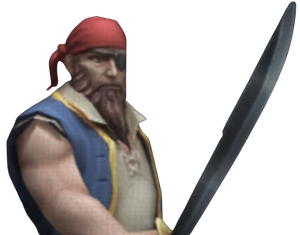
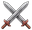
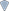
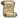

Hulshanks
| Hulshanks | |||||||||||||||||||
|---|---|---|---|---|---|---|---|---|---|---|---|---|---|---|---|---|---|---|---|
 | |||||||||||||||||||
| Release | 12 May 2025 (Update) | ||||||||||||||||||
| Episode | Hopeport | ||||||||||||||||||
| Quest | Missing Fisherman | ||||||||||||||||||
| Premium | No | ||||||||||||||||||
| Health | 3,150 | ||||||||||||||||||
| Experience | 25,317 | ||||||||||||||||||
| Attack Style | Impact | ||||||||||||||||||
| Immune to | None | ||||||||||||||||||
| Vulnerable to | Necromae | ||||||||||||||||||
| Passive | No | ||||||||||||||||||
| Aggressive | No | ||||||||||||||||||
| Description | A big brute of a pirate. | ||||||||||||||||||
 1 45 | |||||||||||||||||||
{kind=link}
Hulshanks is a one-time boss monster fought during 
Locations
edit| Location | Episode | Quantity |
|---|---|---|
| Hopeport Coastal Portal Stone | Hopeport | 1 |
Attacks
editHulshanks has two melee default attacks, both of which use his sword and deal Impact damage:
- A vertical chop, and
- A wide horizontal swipe.
Mechanics
edit| Mechanic | Indicator | Player Damage | Status | Ranged | Strategy |
|---|---|---|---|---|---|
| Anchors Aweigh[1] | None | Yes | Stun | No | Hulshanks sheathes his sword and takes out an anchor, swinging it around him in an untelegraphed circle in a 1-square radius (3x3 around him) as he spins around the arena. The player must move away from Hulshanks when he sheathes his sword, and stay away during the attack. If the player is hit by this attack, they will be dealt increased damage, knocked down and stunned. Once this attack finishes, Hulshanks becomes dizzy and takes increased damage for a brief period of time. The player must use visual cues to successfully evade this attack, as there is no cast bar to indicate its usage. |
- ↑ This name is a fanmade name for the attack, as there is no official cast bar revealing its name.
Update history
editThis information has been manually compiled. Some updates may not be included yet.
| NPCs | |
|---|---|
| Enemies | |
| Items | |
| Scenery | |
| Miscellanious | |
| Core concepts | |
|---|---|
| Monsters | |